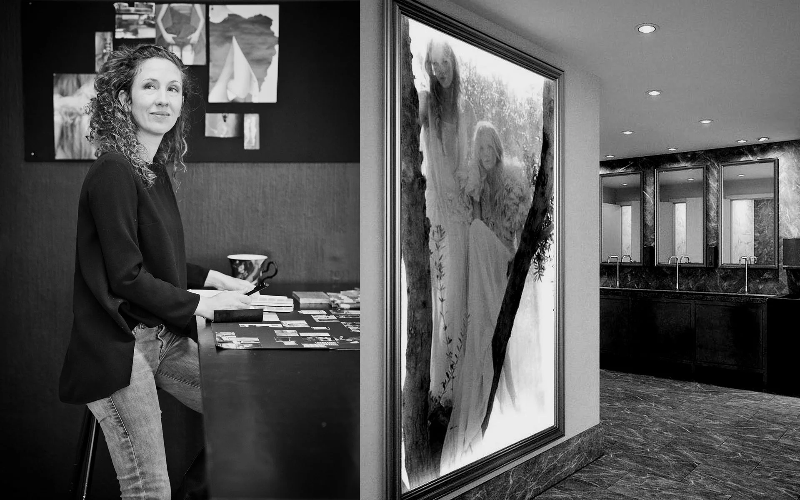

Ge idéerna
mer utrymme.
Kunskap och inspiration som öppnar nya vägar för kreativitet och design.
Prata med Patricia
Inspiration som
blir användbar.
Patricia håller föreläsningar och workshops för företag och designskolor. Innehåll och upplägg anpassas efter deltagarna och uppdragets syfte.
Flera upplägg kombinerar teori med praktiskt arbete, samtal, workshops och presentation.
Föreläsningsämnen
Vilken fråga vill ni utforska? Välj ett ämne för att läsa mer om innehåll och upplägg.
Inredning
Koncept, projektledning, trender och hur inredning kan kommunicera ett varumärke. Även inspirationsföreläsningar med praktiska råd.
Fråga om denna föreläsning
Designprocess
Från idé och trendanalys till färdig produkt. En strukturerad process för kommersiell kläd- och produktdesign där kreativitet möter målgrupp och varumärke.
Fråga om denna föreläsning
Innovationsarbete
Metoder för att använda samlad erfarenhet och samtidigt hitta nya kreativa arbetssätt. Föreläsningen kan anpassas till företagets behov.
Fråga om denna föreläsning
Trendföreläsning
Research och konkreta trendinsikter för en specifik bransch, målgrupp och frågeställning. Kan kompletteras med praktiskt arbete kring trendmaterial.
Fråga om denna föreläsning
Entreprenörskap
En personlig berättelse om företagandets framgångar, misstag och utveckling. Om att driva designverksamhet med flera inriktningar och hitta vägen vidare.
Fråga om denna föreläsning
Vad vill ni
ta med er?
Berätta om deltagarna, ämnet ni är nyfikna på och tillfället. Därifrån går det att hitta ett innehåll och format som passar.
Skicka en föreläsningsförfrågan